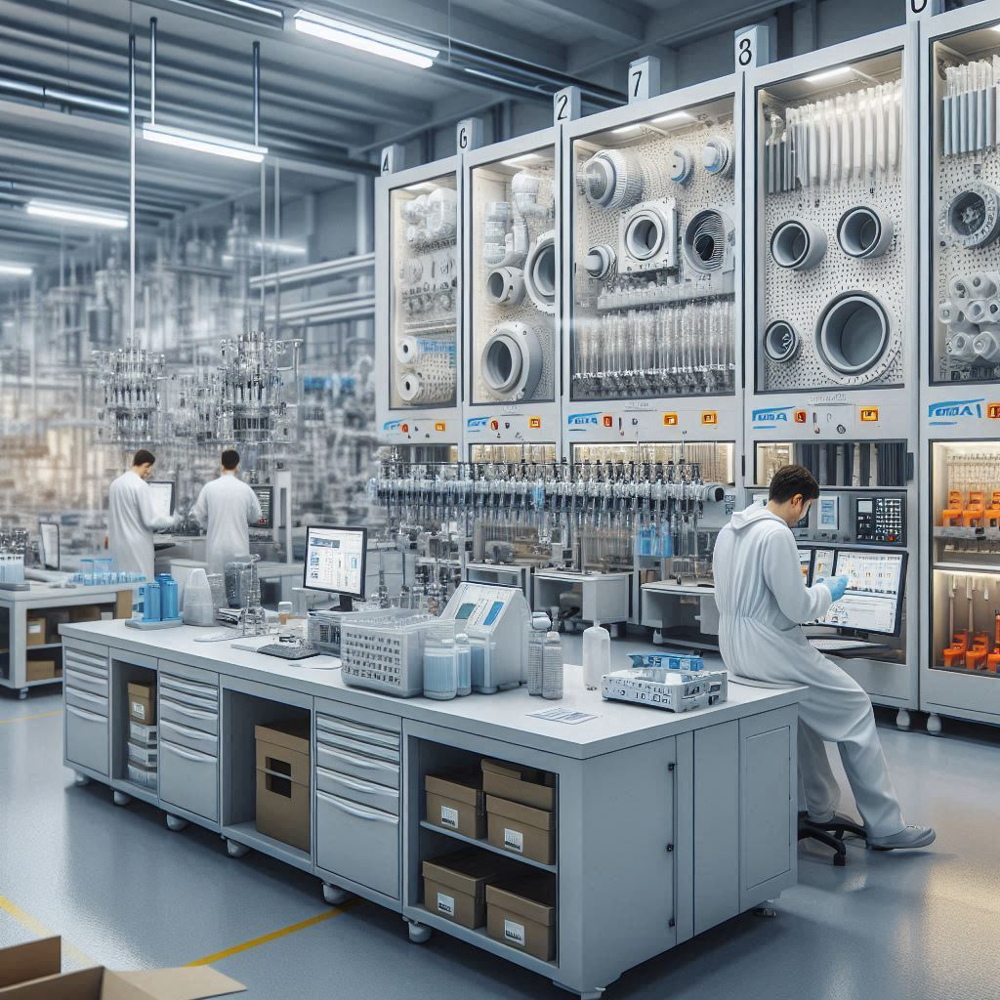
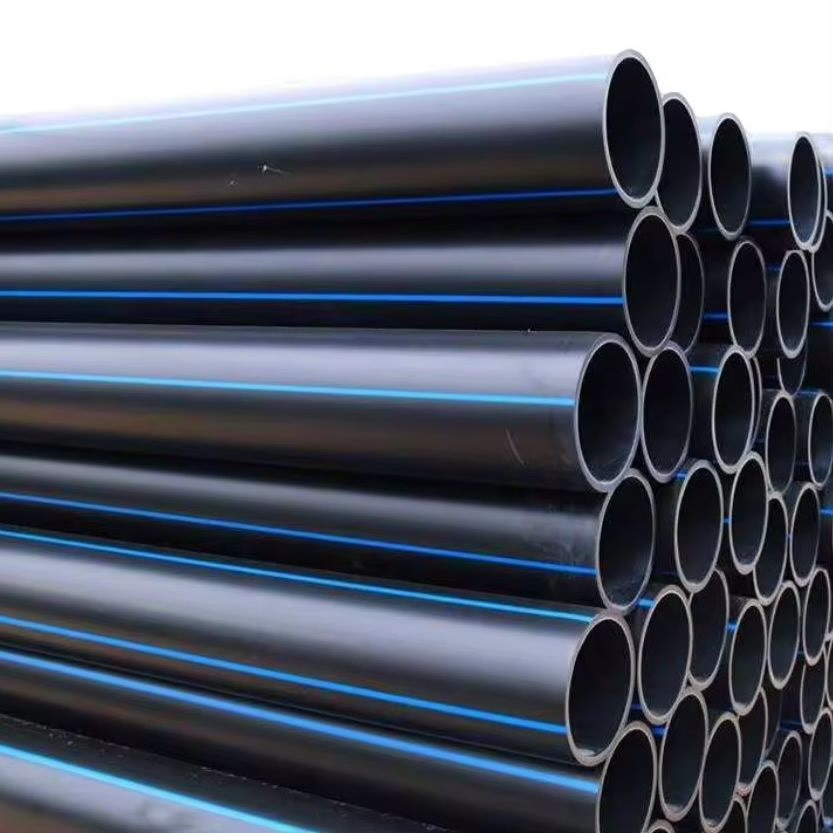
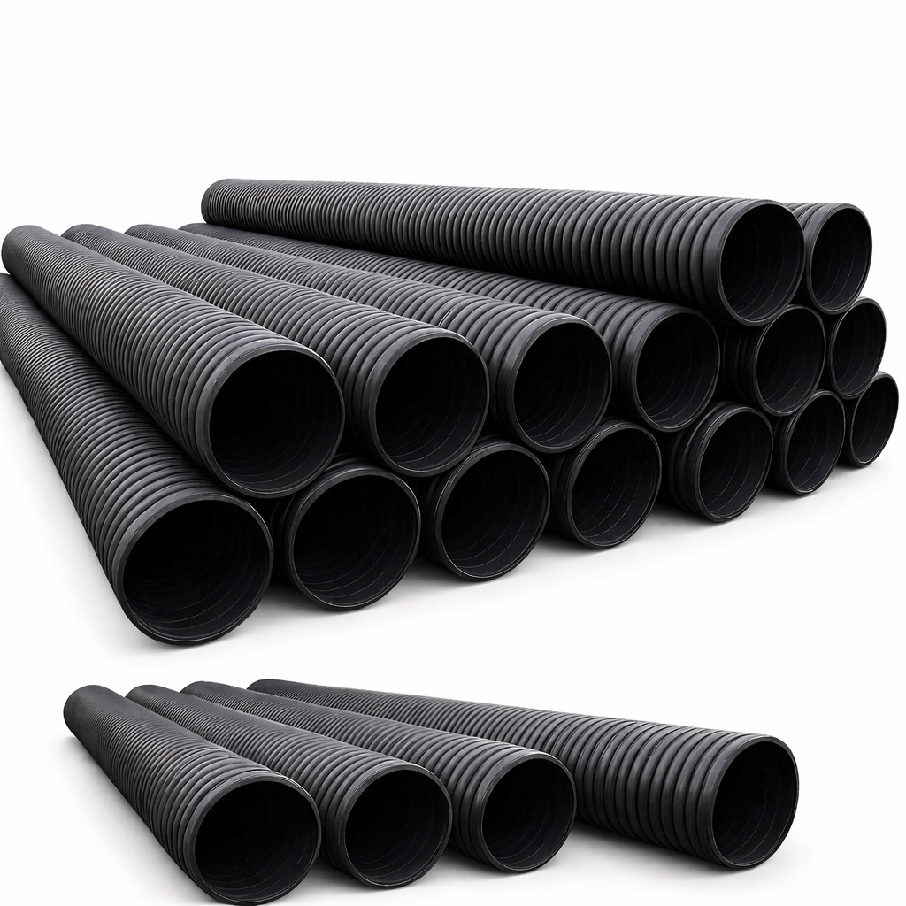
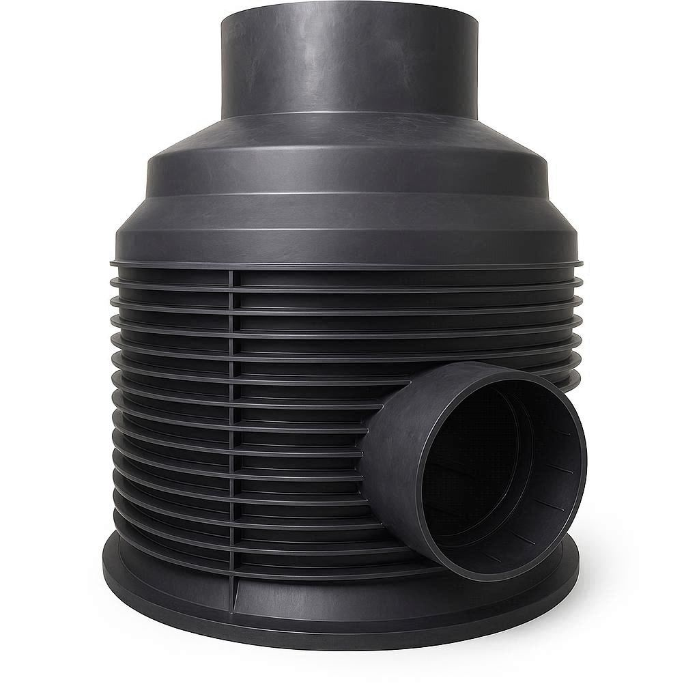
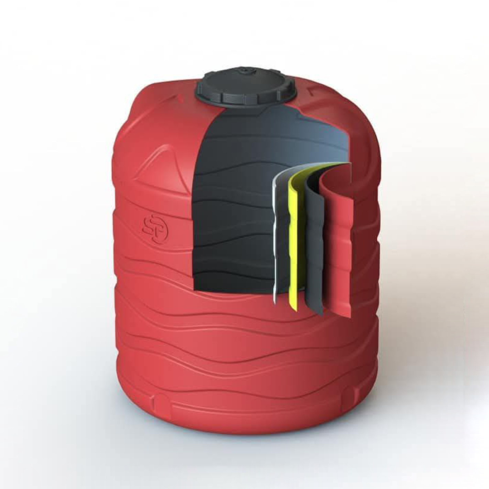
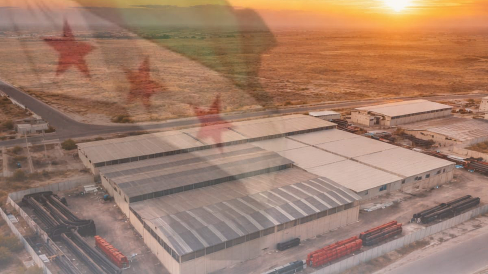
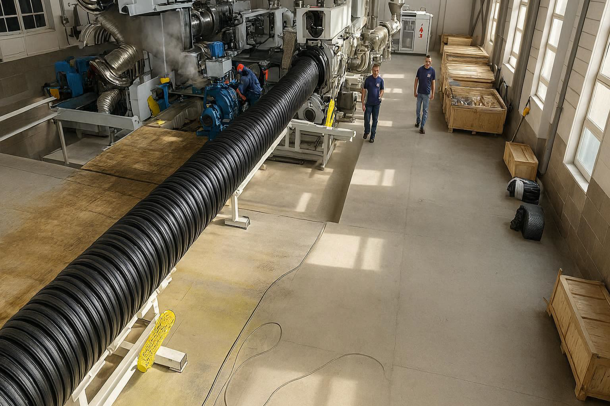
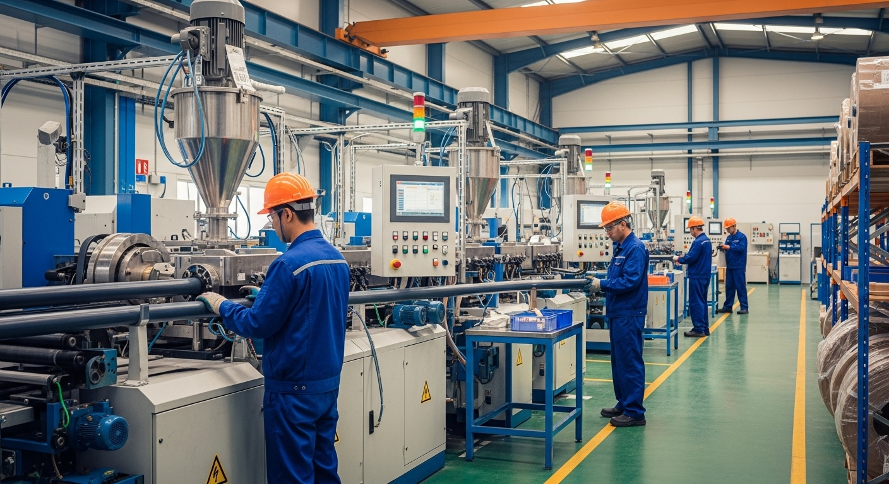

في عالم البنية التحتية، الجودة ليست خياراً… بل مسؤولية.
سوريا بلاست معمل بلاستيك في سوريا يصنع أنابيب HDPE، قساطل صرف صحي، غرف
تفتيش وخزانات مياه لمشاريع إعادة الإعمار.
صناعة وطنية برؤية إقليمية
قدراتنا الصناعية
في سوريا بلاست لا نقدم منتجات فقط، بل نوفر حلولاً صناعية متكاملة لمشاريع المياه والصرف الصحي.
إنتاج أنابيب بولي إيثيلين عالي الكثافة بأقطار من 32 مم حتى 800 مم، مناسبة لشبكات مياه الشرب والمشاريع البلدية.
أقطار تصل حتى 1200 مم، مصممة لتحمل الأحمال الأرضية العالية وظروف التشغيل القاسية.
حلول هندسية متطورة بديلة للبيتون، توفر سرعة تنفيذ وكفاءة تشغيلية أعلى — إنتاج متفرد على مستوى الإقليم.
خزانات مقاومة للعوامل الجوية والأشعة فوق البنفسجية، تضمن حماية المياه وجودتها على مدى طويل.
إنتاج أنظمة تمديد كاملة للمياه الساخنة والباردة مع الإكسسوارات، لتغطية مشاريع الأبنية والمشاريع السكنية.
تصنيع ألواح PVC صناعية — منتج متفرد به المعمل على مستوى القطر، يلبي احتياجات متنوعة في قطاع البناء.
لماذا سوريا بلاست؟
من مدينة حسياء الصناعية، نقدم حلولاً صناعية متكاملة تخدم المشاريع السكنية الكبرى، المشاريع الحكومية، والمشاريع القطرية.
سنوات من الخبرة الفعلية في تصنيع منتجات البنية التحتية البلاستيكية.
خطوط إنتاج متطورة تم تطويرها بشكل تدريجي لتلبية الطلب المتزايد.
فريق بشري متدرب على أحدث تقنيات التصنيع وضبط الجودة.
ماروتا سيتي، مشاريع المياه الحكومية، والإنشاءات العسكرية.

سنوات خبرة
كادر متخصص
طاقة إنتاجية شهرية
أقصى قطر إنتاج (مم)
منتجاتنا

أقطار من 32 مم حتى 800 مم لشبكات مياه الشرب

أقطار تصل إلى 1200 مم للمشاريع الكبرى

إنتاج متفرد على مستوى الإقليم مع كامل الملحقات

مقاومة للأشعة فوق البنفسجية والعوامل الجوية
مشاريعنا
توريد منتجات بلاستيكية لمشروع الرازي ضمن ماروتا سيتي.
توريد مشاريع المياه والبنى التحتية لفرعَي دمشق وحمص.
مساهمة في مشاريع إعادة الإعمار والمشاريع الحكومية على مستوى القطر.
مدونتنا

من مدينة حسياء الصناعية انطلقت قصة سوريا بلاست، مصنع بلاستيك بدأ بخطي إنتاج وتحول إلى شريك أساسي في مشاريع البنية التحتية.
اقرأ المزيد
منذ عام 2018 شهد معمل سوريا بلاست رحلة تطور ملحوظة في خطوط الإنتاج ليصبح من المصانع المتخصصة في أنابيب HDPE.
اقرأ المزيد
مع تطور مشاريع البنية التحتية، أصبحت أنابيب HDPE من أكثر الحلول استخداماً في شبكات مياه الشرب.
اقرأ المزيدتواصل معنا الآن للحصول على عرض فني ومالي دقيق لمشروعك.